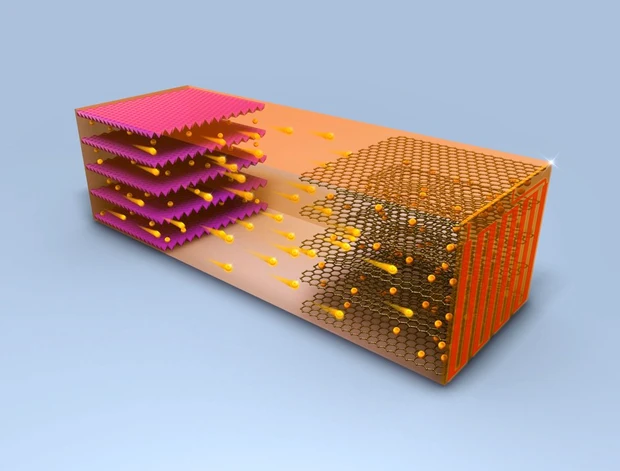

Samsung’s newest foldable phone definitely tops the list of coolest
tech gadgets of 2021, even though it’s only available for pre-order at
the moment. It’s a full-size smartphone touch screen that folds into a 4.2″
compact design for portability and convenience. The frame is made of sturdy
aluminum that protects the hinge and the front and back cover are made of
the toughest glass Galaxy Z has seen thus far. It’s got a 1.9″ cover screen
that displays pressing notifications and it’s got Flex Mode for hands-free selfies.
2. Oculus Quest 2
Oculus Quest 2
Virtual reality might be taking its time to have its ‘iPhone moment,’ but it is
still very much the next big thing when it comes to the coolest tech gadgets.
And there is not a single VR device that flashes that promise more than the
Oculus Quest 2. Without the need for a powerful computer or special equipment,
you can simply strap the Quest 2 to your head, pick up the controllers and move
freely in VR space thanks to its inside out technology, which uses cameras on
the outside of the headset to track your movement in the space around you.
NEWS
>
Mi Smart Band 6
NEWS :
Mi Smart Band 6 With a Bigger AMOLED Touch Display,
14 Days Battery Life Launched in India
Mi Router 4A
NEWS :
Mi Router 4A Gigabit Edition, Mi 360 Home Security Camera 2K Pro Launched in India
REVIEWS
>
Lenovo Smart Clock Essential Review: The Intelligent Clock You Always Wanted
Customer Ratings :
★
★
★
★
☆
The simple bedside alarm clock is a timeless concept,
offering you a quick and convenient way to see all the information you
need as soon as you wake up. It also lends itself quite well to modernisation;
adding Internet-based smarts to a device that already occupies a prime spot in your home.
Strangely, not a lot of manufacturers make this kind of product, and Lenovo is among the
few that do. The company's latest product in this segment is the Lenovo Smart Clock
Essential, priced at Rs. 4,499.
Apple iPad Pro 2021 (11-inch) Review: Untapped Potential
Customer Ratings :
★
★
★
★
☆
The iPad Pro series has always had the most powerful Apple silicon, and in this
year's refresh, it gets Apple's M1 SoC which we've already seen run circles around
Intel CPUs in devices such as the MacBook Air, Mac mini, and most recently, the iMac.
Along with a better processor, the new iPads also have more RAM, a Thunderbolt port,
a new Face ID camera, and optional 5G connectivity.
Evolution of Neo QLED comes with Quantum Matrix Technology,
which precisely controls our exclusive new Quantum Mini LED
With accurate light control, you can enjoy great detail in
in both the darkest and brightest scenes.Samsung’s powerful
quantum processor with deep learning creates the most precise
and adaptive experience you can imagine. Scene-by-scene, the
processor optimizes to your viewing condition and improves your
content. Powerful 4K AI upscaling ensures you always get full 4K resolution.
2. Sony Bravia XR A80J
Sony Bravia XR A80J
Enjoy breathtaking OLED contrast with pictures that feel deep,
natural and real. Our revolutionary processor uses human
perspective analysis to cross-analyse and optimise hundreds
of thousands of elements in the blink of an eye. Combined
with our unique OLED panel, this technology delivers truly
lifelike pictures with ultimate pure blacks.Advanced screen
speaker technology with our Cognitive Processor XR turns
any sound source into an immersive sound experience.
Hear sound more clearly and accurately, whatever you're
watching. Enjoy entertainment in a whole new way with
sound and picture in perfect harmony.
Technology
>
1. Digital “twins” that track your health
In Star Trek, where many of our ideas of future technology germinated
, human beings can walk into the medbay and have their entire body digitally scanned for
signs of illness and injury. Doing that in real life would, say the makers of Q Bio,
improve health outcomes and alleviate the load on doctors at the same time.The US
company has built a scanner that will measure hundreds of biomarkers in around an hour,
from hormone levels to the fat building up in your liver to the markers of inflammation
or any number of cancers. It intends to use this data to produce a 3D digital avatar
of a patient’s body – known as a digital twin – that can be tracked over time and
updated with each new scan.
2. Car batteries that charge in 10 minutes

Fast-charging of electric vehicles is seen as key to their
take-up, so motorists can stop at a service station and fully charge their
car in the time it takes to get a coffee and use the toilet – taking no
longer than a conventional break.But rapid charging of lithium-ion
batteries can degrade the batteries, researchers at Penn State University
in the US say. This is because the flow of lithium particles known as ions
from one electrode to another to charge the unit and hold the energy ready
for use does not happen smoothly with rapid charging at lower temperatures.
Audio
>
1. Oppo Enco W51 TWS Earphones
>
Oppo is mainly
known for its smartphones, but the company also launched a few wireless
earphones this year, among which are the Oppo Enco W51 TWS earphones
that we have with us today.The Enco W51 are priced at INR4,999 ($70/€55) and
come with features like wireless charging and noise cancellation that we can
rarely see in this price range. They also support touch controls and are
claimed to offer a battery life of up to 24 hours.
While that sounds enticing, has Oppo cut too many corners to pack
in those features, or are the Enco W51 actually as good as they look
on paper? We try to find that out with this review.
2. JBL Speaker Flip 2
JBL Flip 2 the wireless, portable, rechargeable
battery powered speaker that is an all-terrain party you can
carry in the palm of your hand. Auxiliary-input (aux in)
connector allows you to plug into practically any audio
device. Allows you to wirelessly stream music through any
Bluetooth enabled device.The black Flip 2 Wireless Portable Stereo
Speaker from JBL is a Bluetooth wireless portable speaker that features
dual 40mm drivers that can produce up to 12 watts of output.
In addition to playing back audio, the Flip 2 has an integrated
microphone for taking calls. The speaker incorporates JBL's
SoundClear echo and noise cancellation technology to provide
clear call quality.